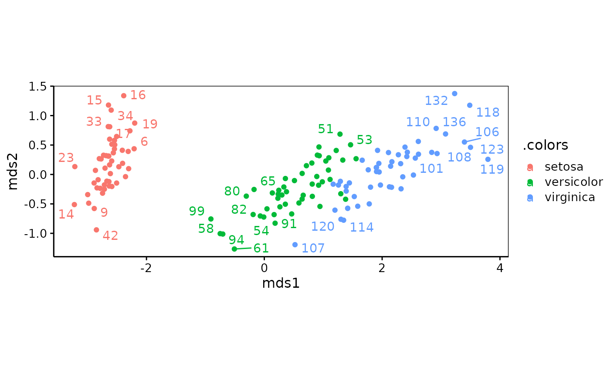
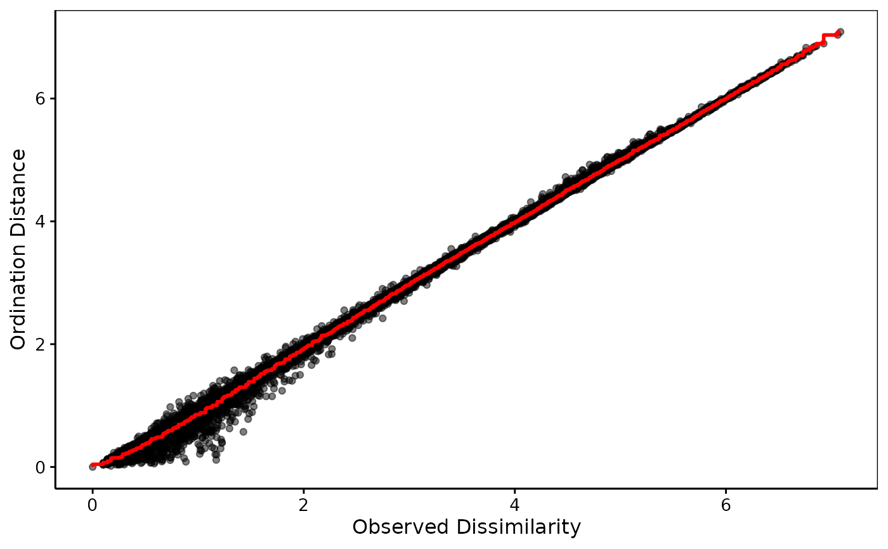

Perform a PCoA (`type = "metric"). or other forms of MDS.
mds(
dist,
k = 2,
type = c("metric", "nonmetric", "cmdscale", "wcmdscale", "sammon", "isoMDS", "monoMDS",
"metaMDS"),
p = 2,
...
)
# S3 method for class 'mds'
plot(x, y, ...)
# S3 method for class 'mds'
autoplot(object, labels, col, ...)
# S3 method for class 'mds'
chart(data, labels, col, ..., type = NULL, env = parent.frame())
shepard(dist, mds, p = 2)
# S3 method for class 'shepard'
plot(
x,
y,
l.col = "red",
l.lwd = 1,
xlab = "Observed Dissimilarity",
ylab = "Ordination Distance",
...
)
# S3 method for class 'shepard'
autoplot(
object,
alpha = 0.5,
l.col = "red",
l.lwd = 1,
xlab = "Observed Dissimilarity",
ylab = "Ordination Distance",
...
)
# S3 method for class 'shepard'
chart(
data,
alpha = 0.5,
l.col = "red",
l.lwd = 1,
xlab = "Observed Dissimilarity",
ylab = "Ordination Distance",
...,
type = NULL,
env = parent.frame()
)
# S3 method for class 'mds'
augment(x, data, ...)
# S3 method for class 'mds'
glance(x, ...)Arguments
- dist
A dist object from
stats::dist()or other compatible functions likevegan::vegdist(), or a Dissimilarity object, seedissimilarity().- k
The dimensions of the space for the representation, usually
k = 2(by default). It should be possible to use alsok = 3with extra care and custom plots.- type
Not used
- p
For types
"nonmetric","metaMDS","isoMDS","monoMDS"and"sammon", a Shepard plot is also precalculated.pis the power for Minkowski distance in the configuration scale. By default,p = 2. Leave it like that if you don't understand what it means seeMASS::Shepard().- ...
More arguments (see respective
types or functions)- x
Idem
- y
Not used
- object
An mds object
- labels
Points labels on the plot (optional)
- col
Points color (optional)
- data
A data frame to augment with columns from the MDS analysis
- env
Not used
- mds
Idem
- l.col
Color of the line in the Shepard's plot (red by default)
- l.lwd
Width of the line in the Shepard"s plot (1 by default)
- xlab
Label for the X axis (a default value exists)
- ylab
Idem for the Y axis
- alpha
Alpha transparency for points (0.5 by default, meaning 50% transparency)
Value
A mds object, which is a list containing all components from the
corresponding function, plus possibly Shepard if the Shepard plot is
precalculated.
Examples
library(chart)
data(iris, package = "datasets")
iris_num <- iris[, -5] # Only numeric columns
iris_dis <- dissimilarity(iris_num, method = "euclidean")
# Metric MDS
iris_mds <- mds$metric(iris_dis)
chart(iris_mds, labels = 1:nrow(iris), col = iris$Species)
#> Warning: ggrepel: 126 unlabeled data points (too many overlaps). Consider increasing max.overlaps

# Non-metric MDS
iris_nmds <- mds$nonmetric(iris_dis)
#> Run 0 stress 0.02525035
#> Run 1 stress 0.03821335
#> Run 2 stress 0.0307977
#> Run 3 stress 0.02525036
#> ... Procrustes: rmse 0.0001001939 max resid 0.0006323391
#> ... Similar to previous best
#> Run 4 stress 0.03567161
#> Run 5 stress 0.03182264
#> Run 6 stress 0.03104432
#> Run 7 stress 0.03102056
#> Run 8 stress 0.02525023
#> ... New best solution
#> ... Procrustes: rmse 7.201641e-05 max resid 0.0004834757
#> ... Similar to previous best
#> Run 9 stress 0.04026037
#> Run 10 stress 0.02525391
#> ... Procrustes: rmse 0.0004747481 max resid 0.003622262
#> ... Similar to previous best
#> Run 11 stress 0.04677425
#> Run 12 stress 0.03079765
#> Run 13 stress 0.0310176
#> Run 14 stress 0.04210446
#> Run 15 stress 0.04134393
#> Run 16 stress 0.04408108
#> Run 17 stress 0.02525033
#> ... Procrustes: rmse 7.163061e-05 max resid 0.0004469441
#> ... Similar to previous best
#> Run 18 stress 0.04804817
#> Run 19 stress 0.04076145
#> Run 20 stress 0.02528288
#> ... Procrustes: rmse 0.001629791 max resid 0.01659899
#> *** Best solution repeated 3 times
chart(iris_nmds, labels = 1:nrow(iris), col = iris$Species)
#> Warning: ggrepel: 126 unlabeled data points (too many overlaps). Consider increasing max.overlaps
glance(iris_nmds) # Good R^2
#> # A tibble: 1 × 2
#> linear_R2 nonmetric_R2
#> <dbl> <dbl>
#> 1 0.998 0.999
iris_sh <- shepard(iris_dis, iris_nmds)
chart(iris_sh) # Excellent matching + linear -> metric MDS is OK here
